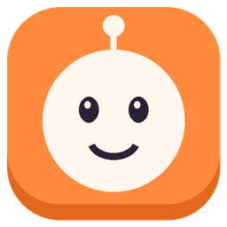
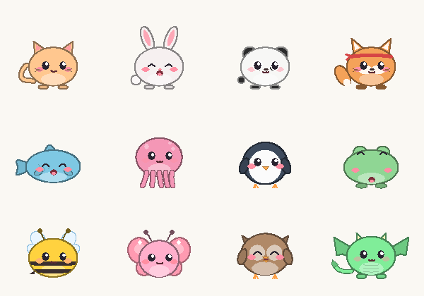

Really does things
Open apps and websites, close, minimize and switch windows, click buttons, type text and press shortcuts. You ask, Buddy acts.
opencloseminimizefocusclicktypekeys

Buddy Downloadan AI buddy that lives next to your mouse
Hold CtrlAltSpace and ask. Buddy flies to the exact button on your screen, explains it in a natural voice, and if you ask it to, clicks, types, opens or closes things for you. It asks first when something is risky.
Windows 10 / 11 · 64-bit · ~151 MB zip · no installer, no account
live demo · no video, the real thing (well, a tiny copy)
Pick something to say, or type your own. Watch how Buddy listens, thinks, points and acts, and how every action lands in the log.
Press Alt+F4?
how it works
Hold the keys and speak, then let go to send. Tap them instead and a little ask box opens at your mouse. Highlighted text comes along too, so “explain this” just works.
Only when you ask, Buddy takes one look at the screen under your mouse and reads its real buttons, tabs and boxes through Windows UI Automation, the same thing screen readers use.
The orange arrow flies over and snaps onto the actual button, not a rough guess, while Buddy explains out loud in a natural voice.
“Click Insert.” “Minimize Outlook.” “Type hello.” Buddy does it, checks that it's still the right window right before it clicks, and asks first when something is risky.
what's inside
Open apps and websites, close, minimize and switch windows, click buttons, type text and press shortcuts. You ask, Buddy acts.
Office, browsers, Electron apps, even the taskbar. The arrow lands on the real element. In apps that draw their own UI, Buddy uses its best estimate.
Select an error, an email or a formula and ask “what's this?”. Buddy reads the selection through Windows accessibility and never touches your clipboard.
Natural voices that run on your own PC in 7 languages. They start talking while the rest of the answer is still being made.
hear them →Smart (company AI gateway, ~1–2 s) or Local (private, on your GPU or CPU). If Smart can't be reached, Buddy quietly switches to Local.
compare →Pips lives on your taskbar, tracks your focus, runs pomodoros and gets cuddly when you pet it with your mouse. 12 species.

KeyIt gives every key and click a satisfying sound. CtrlAltM mutes it for meetings.
Hand Buddy a request from a shortcut or a script:
Buddy.exe --ask "open notepad"
Pick a colour and an icon in Settings → Look. The bubbles and the "Buddy asks" box follow your colour. Try it on the buddy chasing your mouse right now:
The buddy runs on its own thread with its own tiny window, so it sticks to your mouse even while your laptop is busy. After a hiccup it jumps straight back instead of crawling after you.
Measured with a mouse moving ~500 px/s.the part we're proudest of
natural voices · made on your PC
These clips came straight out of Buddy's own voice engine. Nothing was recorded in a studio and nothing was sent to the cloud. When an answer is in Chinese or Hindi, a matching voice reads it automatically.
two brains, your choice
Whichever brain you pick, Buddy's voice and its hands stay on your PC. If Smart can't be reached, Buddy answers with the Local brain for 5 minutes, then tries Smart again.
vs. the other guy
Clicky is a lovely idea, and it inspired Buddy. Here's where they differ.
| Buddy | Clicky | |
|---|---|---|
| Built for Windows | Yes, native | Mac first. Windows through paid HeyClicky |
| Price on Windows | Free | Paid |
| Points at things on screen | Yes, snaps to the real element | Yes |
| Does things for you | Click, type, open, close, minimize, shortcuts | Points and explains |
| Asks before risky actions | Yes, plus a full action log | n/a (no actions) |
| Can run fully on your PC | Yes, with Local brain, voices and speech | Cloud services |
| Voice | Natural, on-device, 7 languages | Cloud voice (ElevenLabs) |
| Choice of brain | Smart · Local GPU · Local CPU | Claude |
| Bonus | Focus pet, pomodoro, key sounds | No |
Clicky details are from heyclicky.com and its public repo (Nov 2026) and may change. Spotted something out of date? Tell us and we'll fix it.
questions
Yes. Download the zip, unzip it anywhere and run Buddy.exe. There's no installer, no account and no Python needed.
No. Buddy points by default. It only acts when your own words ask it to, it clicks only when you say click, press or select, and it asks Yes/No before risky things like Alt+F4 or force-closing a frozen app. It never clicks a window's own close or minimize buttons. Every action is written to a log file.
No. It takes a single look at the monitor under your mouse only at the moment you ask. With the Local brain, that look never leaves your PC. With the Smart brain, the screenshot and your question go to your company's internal AI gateway and nowhere else.
Windows 10 or 11 (64-bit) and a ~151 MB download. A microphone is optional because you can tap the hotkey and type. The natural voices download once (~120 MB) and then work offline. The Local brain uses Ollama with a small vision model. On a laptop GPU it answers in about 5–15 s.
English (US and UK), Chinese (Mandarin), Spanish, French, Italian, Portuguese (Brazil) and Hindi. If an answer switches to Chinese or Hindi, a voice of the same gender reads that part automatically, and English words inside Chinese still sound like English.
Smart runs on your company's AI gateway, so it needs a company MAAS login. Everyone else can use the Local brain, which is private and needs no account.
Yes. In Settings → Look, pick one of 10 colours (or any custom colour) and an icon: arrow, mouse pointer, paper plane, dot, star, heart or the Buddy face. It changes straight away, and the speech bubbles and the "Buddy asks" box use your colour too.
Yes. By default it rests next to your mouse (like the one on this page, try the “buddy: on” switch up top). In Settings, untick Keep Buddy next to my mouse all the time and it only shows up when you ask.
Your computer just got a friend, and it's free.
Download Buddy for WindowsBuddy-win64.zip · ~151 MB · unzip & run